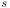

1 Introduction
[hide]
Image Registration is the process of matching two or more images of the same scene by superposition. This requires estimating optimal geometric transformations to align the images with respect to a common reference. Image registration is of crucial importance in all processing and analysis tasks based on the combination of data from sets of images. Some examples are image integration, multichannel image composition, shared information retrieval, change detection and image mosaicing. These tasks have applications in astronomy, medical imaging, remote sensing, cartography, real-time target recognition and computer vision, just to name a few.
Exhaustive surveys of existing image registration techniques can be found in the references. [1] [2] Image registration algorithms can be loosely divided into two major categories: feature-based methods and area-based methods. Feature-based methods try to find relevant image features, known as control points, such as corners, point-like structures, line intersections, line ending points or high-curvature points, that can be matched between two or more images. Once a sufficiently large number of control points have been matched by correspondence on two images, a suitable geometric transformation can be computed and applied to align them.
Area-based methods, also known as featureless, correlation-based or template matching methods, work by finding correspondences between regions of the images without considering any salient features. Most of these algorithms are based on cross correlation in the spatial or frequency domain, or in maximization of mutual information. [5] Correlation can be estimated locally—for example, for rectangular regions distributed over a regular lattice—or globally for the whole image. If two images can be correlated, then the registration process continues as in feature-based methods: the parameters of a geometric transformation that maximizes cross correlation are estimated, and the images are aligned accordingly. A class of fast Fourier transform-based (FFT-based) phase correlation algorithms [3] [4] is commonly used for alignment of planetary images.
Another important criterion for classification of image registration algorithms considers the applied geometrical transformations. In order of complexity, these transformations can be rigid, affine, piecewise affine and non-rigid or elastic. Rigid registration models are linear and only allow for translations, rotations and uniform scale changes without any distortion. Affine models are also linear and support overall distortions represented as shears and stretches. Piecewise affine and elastic models are nonlinear and allow for arbitrary local and global distortions.
The image registration task is one of the most complex and challenging problems of image analysis, where the extreme diversity of images and working scenarios make impossible for any image registration algorithm to be suitable for all applications. Area-based algorithms are necessary in those cases where registration control points cannot be determined without high uncertainty. Two good examples are registration of planetary images and most medical images. Feature-based registration algorithms are appropriate for images with high detail contents, where enough features can be easily and accurately detected. This includes most computer vision applications and also deep-sky astronomical images, which are the main target of the StarAlignment tool that we are going to document. In deep-sky images, stars serve as nearly ideal registration control points—this is in fact one of those extremely rare cases where the nature of astronomical images works in our favor.
2 Description
[hide]
The StarAlignment tool has been specifically designed for alignment of deep-sky astronomical images. It implements feature-based, automatic image registration algorithms using stars as alignment references. As usual in PixInsight, StarAlignment is a robust and versatile tool with a large number of parameters and working modes to maximize user control, but at the same time, it generally can be used with default settings to achieve excellent results very easily. With the exception of a few difficult cases, we can affirm that StarAlignment is, despite its complexity, a remarkably easy-to-use tool.
StarAlignment implements a bunch of sophisticated algorithms to carry out the critical task of image registration in a completely automatic way. This is by no means an easy task; as we have said in the introduction, this is in our opinion one of the most complex and difficult problems of image processing, where offering a significant contribution is really challenging. The following list enumerates StarAlignment's main features:
- Automatic image registration of deep-sky astronomical images.
- Single image registration when the process is applied to a view (open image).
- Batch image registration mode for unattended alignment of large sets of disk image files.
- Mosaic generation modes for creation of merged mosaics or separate mosaic components.
- Automatic frame adaptation for creation of seamless mosaics.
- Special control modes: structure detection, structure map, detected stars, matched stars and transformation matrix for tight control on the star detection and star matching phases of the algorithm.
- Optional generation of registration masks for evaluation of registration accuracy and implementation of special composition operations.
- Full control on output image generation with selectable output directory, file format, file name prefix and postfix, and pixel sample format.
- Multiscale star detection algorithm with programmable sensitivity, peak response and maximum star distortion.
- Automatic hot pixel removal implemented by morphological pre-filtering.
- Automatic noise reduction by suppression of small-scale wavelet layers.
- Robust RANSAC star matching algorithm with programmable optimization criteria.
- Automatic FFT-based intersection estimation for robust mosaic generation with minimal overlapping.
- Manual restriction of star matching to predefined previews, available as an option to solve extremely difficult cases.
- Projective and surface spline-based registration models for coordinate interpolation.
- Full set of pixel interpolation algorithms available for output image generation.
2.1 The StarAlignment Process
The StarAlignment process is composed of several functional blocks: star detection, initial star matching, RANSAC matching routine, registration model generation, and coordinate/pixel interpolation. In the following sections we'll describe each of these blocks with thorough bibliographic references.
Figure 1
A flowchart representation of the StarAlignment process. Three error conditions can abort the process: (a) the initial star detection phase doesn't find at least three stars on each image, (b) the initial star matching routine cannot find at least three putative star pair matches, and (c) the RANSAC routine (described below) doesn't find a valid registration model. Condition (a) aborts the process unconditionally. In the event of conditions (b) or (c), we have implemented an automatic trial mode where the process attempts to use several predefined sets of star matching parameters in sequence.
2.2 Star Detection
This initial step is a critical part of the image registration task. If stars are not detected accurately, the whole process will fail, or it will perform unreliably. Fortunately, stars are nearly ideal image registration references. Compared with corners, intersections, endpoints and other scale-invariant features, stars are relatively easy to be identified accurately as significant image structures: just look for a small-scale, bright structure whose intensity decreases similarly in all directions; if you find one of these, most likely what you've found is a star, or a star-like feature. In addition, describing a star as an alignment reference is also relatively simple: being essentially a point, a star is naturally invariant to translation, rotation and scale; we just need its position in pixel coordinates and its brightness (in some arbitrary scale) to fully characterize it.
Actually, we are oversimplifying somewhat here: stars are not that easy to detect in a robust and reliable way. We need to detect as many stars as possible, but at the same time we want to be immune to false star-like structures (e.g., hot pixels and cosmic rays) and small nonstellar objects. On the other hand, not all of the stars in an image are valid registration references: saturated stars, too bright stars, too dim stars, multiple stars and stars crossing detection region boundaries do not qualify. Noise and local illumination variations can also be quite problematic here. The StarAlignment tool implements a multiscale (wavelet-based) star detection algorithm that is quite robust to all of these problems.
Figure 2
The star detector process in flowchart representation (left). Right column, from top to bottom: original image (a raw linear image shown here with a screen stretch applied), detected structures in wavelet space, structure map after thresholding and binarization, and detected stars. The star filter subtask rejects all detected structures that don't fulfill a set of prescribed detection criteria, such as non-saturation, minimum flux, minimum peakedness and maximum distortion, among others. This filters out saturated stars, too dim stars, multiple objects and most nonstellar objects. The purpose of this rejection procedure is to keep only image structures for which a position can be determined with minimal uncertainty. Detection criteria are controllable through process parameters, but their default settings are nearly optimal in most cases.
2.3 Star Matching
2.3.1 Initial Star Matching: Triangle Similarity
Once we have a list of stars for each image, we have to find matching pairs of stars. This is a classical and rather difficult computational problem: the correspondence problem. We have implemented a variation of the basic algorithm described by F.G. Valdés et al. [6] and further refined by M. Marszalek and P. Rokita. [7] These elegant algorithms are based on triangle similarity. The basic idea is that the relationships between the sides of a triangle are invariant to several affine transformations of interest: translation, rotation and uniform scale change, plus mirroring. By identifying similar triangles in both images we can match pairs of stars between them if the images are subject to those transformations.
The original algorithms haven't been designed for image registration purposes, but to match stars acquired on CCD images with star catalogs as part of automated sky survey systems. For this reason, these algorithms build and compare all existing triangles formed with a very reduced set of stars used as alignment references. There are N×(N−1)×(N−2)/6 distinct triangles definable with N stars, which implies that the whole star matching task is roughly an O(N3) problem when all triangles are used. In practice this limits the number of stars used for registration to not much more than about 200 with reasonably modern hardware. With 200 stars we can build 1,313,400 triangles, but with 250 stars that number grows up to 2,573,000, or about twice more triangles just to increase the amount of stars by a 25%. 200 stars can be clearly insufficient for many practical image registration purposes. For example, when building mosaics, the reference and registered images usually share a very small fraction of the detected stars, so limiting the star matching process to the 200 brightest stars on each frame turns it into a useless task most times.
To overcome these limitations our implementation differs from the original algorithms. We build all existing triangles for the brightest 200 detected stars, but for the rest of them (no specific limit), a relatively small number of triangles are built for each star. For any given star in the faint subset, n triangles are built with its 2n nearest neighbors, where n is a user-definable parameter that defaults to 40 triangles per star. This generates a very large but still manageable set of triangles. With the help of carefully designed data structures, the whole star matching task becomes an O(N) process asymptotically for large amounts of alignment stars. Besides reducing the complexity of the process, which allows us to use thousands of stars instead of a few tens, building a limited number of triangles based on star proximity has an additional advantage: since we are favoring comparisons among a large set of small-scale triangles, our version of the algorithm can deal much better with small amounts of global distortion. By using mostly large-scale triangles between a reduced number of bright stars, the original matching algorithm is much more intolerant of distortion.
2.3.2 Robust Star Matching + Optimization: RANSAC
Along with a different triangle construction strategy, our implementation uses a completely different mechanism to enforce robustness of the star matching process. Robustness here means high resistance to false matches, or outliers. After the initial star matching routine based on triangle similarity, we have a list of putative star pair matches. However, in general a significant fraction of these matches are not true correspondences between the same stars in both images—hence the word putative here. It is crucial to the accuracy of the whole image registration system that all false matches be detected and removed, keeping only true star pair matches, which we call inliers in this context. Different strategies have been proposed to carry out this critical task. The authors of the original papers have used rejection methods based on a median transformation [7] and iterative sigma-clipping. [6] Faithful to our preference for robust methods, instead of those techniques we have implemented a custom adaptation of the RANSAC (RANdom SAmple Consensus) algorithm. [8] [9] Our RANSAC routine can tolerate a large fraction of outliers (more than a 70% of false star pair matches in our tests), and has been parallelized to use all available processors (running several instances of RANSAC concurrently for the same data increases linearly the probability of finding a valid registration model).
At this stage of the image registration process, our RANSAC routine is used to achieve two key goals simultaneously: perform robust rejection of outliers (false star pair matches), and optimize the registration model according to four programmable optimization criteria:
- Inliers maximization. This criterion tries to find a valid projective transformation using the largest possible fraction of putative star pair matches.
- Overlapping maximization tries to find a valid registration model using a set of stars to cover the largest possible common area on both images.
- Regularity maximization tries to find a valid registration model using a set of stars distributed as regularly as possible on the overlapping area between both images in both plane directions.
- RMS error minimization tries to find a valid registration model where the root mean square error between the predicted and actual positions of all intervening stars is as small as possible.
For normal image registration tasks all four optimization criteria are equally pursued by default. For small overlapping mosaics and other difficult problems, increasing the weights of overlapping and regularity maximization for RANSAC can be helpful to achieve more accurate results in some cases.
The output of the RANSAC routine is the best set of confirmed star pair matches found, plus estimates of the root mean square error and peak errors in the computed transformed coordinates for both axes, and four quality estimates in the [0,1] range corresponding to the four optimization criteria. Customarily in PixInsight, we provide all of this information to the user for quantitative evaluation.
Figure 4
A flowchart representation of the (simplified) RANSAC star matcher routine. At each iteration, the algorithm selects four putative matches at random, builds a registration model (homography H), and validates it against all target stars. In this flowchart we use the following symbols:
- H: computed homography for the current set of four randomly selected reference stars.
- N: number of reference stars.
- i: iteration counter.
- L: the number of validated star pair matches (inliers) with the current model.
- Si: the ith reference star.
- Ti: the ith target star.
- Pi: predicted target position for the ith reference star.
- ε: RANSAC tolerance in pixels. When the distance between a predicted position Pi = H(Si) and the corresponding matched target star Ti is less than this tolerance, the matched pair Si ⟷ Ti is confirmed as an inlier with the current model.
The output of the RANSAC routine is the best fitted model, along with a set of statistical properties and four quality indexes, according to the prescribed optimization criteria. The RANSAC process is aborted 'prematurely' when a fitted model validates more than a 98% of the putative star pair matches as inliers.
2.3.3 Reducing Uncertainty for Mosaics: Computing Intersections
The probability of finding a valid model after iterations of the RANSAC algorithm is given by:
where is the fraction of inliers in the input data set, and  is the length of the sample required to build the model. Note that the probability of finding a valid model is independent on the length of the data set; only the sample size and the fraction of outliers (or inliers) are relevant. Solving for the number of iterations:
For the StarAlignment task we have (four star pairs are required to define a projective coordinate transformation; see the next section) and a fixed probability by design. For normal image registration tasks, where the reference and target images almost completely overlap, we usually can expect a fraction of inliers in the range from 0.5 to 0.95, depending on effective overlapping, noise, resolution and scale differences, among other factors. Under these favorable circumstances the RANSAC routine is extremely efficient.
A serious problem arises when the overlapping area between two images is very small. In these cases the uncertainty in the initial triangle matching process can grow exponentially to the point where RANSAC becomes impractical. This happens when the fraction of inliers descends below a 25% of the set of putative star pair matches. For example, with a 25% of inliers grows up to about 2400 iterations, which is quite large but still manageable. However, if the fraction of inliers descends to a 20% of the input set, more than 5700 RANSAC iterations are required. In these cases and without further help, the StarAlignment process can be unable to find a valid registration model.
Fortunately we have found a good solution to this problem: precompute the intersection between the reference and target images, and constrain the whole star matching task to the overlapping area. In this way we can drastically reduce the fraction of outliers, so that the RANSAC algorithm can work under optimal conditions. The intersection can be estimated with a robust FFT-based image registration algorithm using phase correlation. The implemented FFT-based algorithm [10] is rather fast and allows us to compute a sufficiently approximate intersection, accurate to within one degree in rotation angle and a few pixels in the coordinates. With this feature the StarAlignment process can build mosaics in a completely automatic way, even very difficult mosaics with less than a 5% overlapping. For extremely difficult cases with less than a 2% overlapping and/or scarce star coverage on overlapping areas, we have implemented a simple manual method where the user can define the approximate overlapping areas with the help of previews. With all of these resources, our tool can build mosaics of any practical size and complexity.
Figure 5
Number of RANSAC iterations vs. fraction of inliers in the StarAlignment process. The function plotted is the number of RANSAC iterations required to find a valid 2-D projective model (where the sample size is 4 star pair matches) with 99.99% probability.
Figure 6
A difficult mosaic with 5% overlapping automatically generated by StarAlignment with FFT-based intersection estimation. The overlapped region between both images (about 120 pixels tall) has been highlighted in red. Image data courtesy of Jordi Gallego.
Figure 7
(a) Inliers maximization.
(b) Overlapping maximization.
(c) RMS error minimization.
(d) Full optimization: inliers + overlapping + regularity + minimize RMS error, with increased RANSAC tolerance.
Matched stars with different RANSAC optimization criteria for the M31 mosaic shown on the figure above. These crops show the overlapped area between both mosaic frames, with red dots indicating matched stars. In these images the distortion inherent in the representation of a significant fraction of the sphere on the plane becomes problematic. This is particularly evident with overlapping maximization (b): forced to spread star matches over the largest possible region, RANSAC has chosen a set of stars on an arc segment. With inliers maximization (a) and RMS error minimization (c), no optimal solution can cover the whole overlapping region horizontally. Finally, the best result is obtained by favoring all optimization criteria and increasing RANSAC tolerance (d), which allows to find an optimal set of star pair matches covering the entire overlapping region.
2.4 Estimation of Transformation Parameters
Our implementation uses a two-dimensional projective coordinate transformation, also known as 2-D homography, as an image registration model. [11] A 2-D homography is defined as a 3×3 homogeneous matrix such that for any point correspondence :
where the points are defined by their homogeneous coordinates: and on the reference and target image, respectively. A 2-D projective model fully captures all affine transformations (translation, rotation, scaling and shearing), plus chirping (change in spatial frequency with position), keystoning (converging lines) and mirroring, while preserving straight lines. [12] A 2-D projective transformation has eight degrees of freedom, so we need strictly at least four star pair matches to compute it (the matrix has nine elements, but is defined only up to scale so the common scale factor is irrelevant). To ensure a valid transformation between two images with the implemented algorithms, a minimum of six matched star pairs are necessary to fit an affine transformation, and at least 8 pairs are required to fit a projective model.
The final transformation matrix is obtained from the set of star pair matches provided by the RANSAC routine. We have implemented the eight-point algorithm with isotropic scaling [13] [14] and the direct linear transformation (DLT) algorithm. [15]
2.4.1 Improving Accuracy: 2-D Surface Splines
Recall that our implementation builds all the existing triangles only for the 200 brightest detected stars. For the rest of stars, a relatively small number n of triangles are built with the 2n nearest neighbors of each star (n=40 by default). This process favors comparison of many small-scale triangles instead of a few large-scale ones during the initial star matching phase, which in turn allows for some degree of flexibility in the registration model. Nothing similar to an elastic model, of course, but we have some potential to represent distortions in a piecewise manner. We do exploit this potential, and with remarkably good results in some difficult problems, mainly in mosaics with small overlapping.
To help with this relaxation of the registration model, the RANSAC routine has an additional parameter, which we call tolerance. It is the maximum allowed distance in pixels between a star's position and its predicted position using the projective transformation being evaluated by RANSAC. The robust nature of the RANSAC algorithm allows us to introduce some uncertainty in the solution design and still get an optimal model with very high probability. In our implementation the default RANSAC tolerance is two pixels, but it can be increased up to 8 pixels. With well designed optimization criteria and increased tolerance, RANSAC is able to find more valid star pair matches that deviate significantly from a model strictly based on triangle similarity. To capture these deviations, a flexible coordinate interpolation device is necessary. In our implementation we use 2-D surface splines, also known as thin plates. [16] [17]
Figure 8
Left side.
Center.
Right side.
The accuracy of 2-D surface spline interpolation for image registration is shown on these crops of the M31 mosaic used in preceding figures. The images show different regions of the joint between mosaic frames, enlarged 4:1. As before, the overlapped area has been highlighted in red. Note the stars 'sectioned' by the seam between mosaic frames.
2.5 Seamless Mosaics: Automatic Frame Adaptation
Visible seams between adjacent frames are a major problem in mosaic and panorama construction. The seams are mainly due to differences in texture and brightness. Visible texture differences can be problematic in deep-sky mosaics and are generally caused by differing noise levels and noise distributions. We have no remedy for these: if you are trying to create a mosaic from images with significantly different signal-to-noise ratios, then you're probably wasting your time. Better improve the defective frames by gathering more signal, or try a smaller mosaic if you can, or use wider field optics, but building a mosaic with incongruent data is one of the worst nightmares of astrophotography. Selective noise reduction can help to some extent—and even fix minor texture difference problems—but it is obviously far from an optimal solution.
Visible brightness differences can be global, local, and a mixture of both. We certainly can help you with these. The StarAlignment tool has a built-in feature to fix global brightness differences automatically: frame adaptation. Our frame adaptation algorithm is based on a rather simple principle: each pixel is the sum of a background level—which should be a constant pedestal for the whole image—and a signal level that varies locally. This is an instance of those cases where a simplified view captures the essence of a problem to provide a powerful solution. The frame adaptation routine gathers all pixels in the overlapped region between each pair of adjacent frames and fits a simple linear model from their differences:
where is a pixel of the target image,  is the corresponding pixel in the adapted image, and and
is the corresponding pixel in the adapted image, and and  are, respectively, the difference in background levels and the quotient of signal levels between the target and reference images. Applied to each pixel of the target image, this function removes any visible differences between both aligned frames. However, for this to work correctly the following conditions must hold:
are, respectively, the difference in background levels and the quotient of signal levels between the target and reference images. Applied to each pixel of the target image, this function removes any visible differences between both aligned frames. However, for this to work correctly the following conditions must hold:
- (a) Either both images are linear, or they are subject to identical nonlinear transformations. In other words, the difference between the images must be representable as a linear function.
- (b) Both images are correctly calibrated. In particular, accurate flat fielding is mandatory.
- (c) Either there are no additive gradients, or additive gradients are identical in both images.
Condition (a) shouldn't be a problem if you work with calibrated raw CCD or CMOS data. Condition (b) will put your observational skills to the test: small flat fielding errors will always lead to visible differences, and this is one of the most challenging aspects where mosaic construction takes no prisoners. Condition (c) means that either you are one of those privileged persons that still can image under unpolluted skies, or you have to apply accurate gradient correction procedures before attempting to build a mosaic. So if you are one of those normal persons, then DynamicBackgroundExtraction and AutomaticBackgroundExtractor are your best friends.
2.5.1 Building Seamless Mosaics in Practice: GradientMergeMosaic
To be realistic, condition (c) above is a tough one. Accurate flat fielding is indeed possible—in case you disagree, the figure below and the example at the end of this document prove this—and you should be able to implement it consistently with your equipment, or otherwise you still have some very basic work to do for improvement. Actually, when failure to meet conditions (b) and (c) leads to visible mosaic seams, the problem is the same in both cases: irregular illumination. Assuming perfect flat fielding, additive sky gradients can be extremely difficult to fix completely, even with sophisticated algorithms such as those implemented in our background modelization tools. With the due respect to linear functions, when no matter what you do you still get some visible seams with StarAlignment's frame adaptation enabled, then you need something more powerful. GradientMergeMosaic (GMM) is an open source PixInsight tool written by German software developer Georg Viehoever. GMM implements gradient domain manipulation algorithms to generate absolutely seamless mosaics, even in very difficult cases. GMM must be applied to separate mosaic frames generated by StarAlignment with the frame adaptation option enabled, that is, to mosaic frames where only local illumination differences persist.
2.6 Output Image Generation
The final step of the image registration process is to interpolate the target image to generate a registered version that matches the reference image. This involves the two very different tasks of coordinate interpolation and pixel interpolation. Coordinate interpolation works by inverse mapping: given a pixel of the output registered image, compute the coordinates of the corresponding pixel in the input target image. This is done by simply applying the registration model: either a projective transformation (homography) or 2-D surface splines. The other task is more subtle at this point. Different pixel interpolation algorithms may enhance rather different properties in the output image, and we often are forced to make a decision between two or more desirable properties: smoothness or sharpness, higher subpixel accuracy or better preservation of the original noise distribution, upsampling or downsampling performance, and so on. To be as versatile and widely applicable as possible, StarAlignment implements the whole set of pixel interpolation algorithms available on the PixInsight/PCL platform.
As most interpolating geometric tools in PixInsight, StarAlignment has an automatic interpolation mode enabled by default. When this mode is selected, the Lanczos-4 pixel interpolation algorithm is always used to register images with no scale differences, when the target image has to be scaled up (upsampled), and for slight scale down (downsampling) ratios. Lanczos interpolation has the best performance for these tasks in terms of subpixel accuracy, detail preservation and minimal aliasing artifacts. An alternative of lower quality but much faster in these cases is bicubic spline interpolation, [18] which has been the standard pixel interpolation in PixInsight until Lanczos algorithms were implemented in early 2012. For larger scale down ratios Mitchell-Netravali cubic filters [19] are used. This automatic mode, along with all pixel interpolation algorithms available, are described with more detail in the above referred document. We think its performance is optimal for most image registration tasks.
2.7 Known Limitations and Future Work
The following are the most important limitations of the current StarAlignment implementation:
- The initial star matching routine is based on triangle similarity. As a result, the whole image registration process is rather intolerant of global distortion. We overcome this limitation to some extent with a modified triangle generation strategy (favoring generation of many small-scale triangles) and an improved RANSAC implementation (programmable optimization criteria and increased RANSAC tolerance). However, a more flexible initial star matching algorithm would be desirable in situations where distortion currently prevents the tool from working properly, such as registration of wide field images acquired with different instruments and super-wide-field mosaics. As of this writing, we are working on a new star matching algorithm of our own design, based on invariant local descriptors, which doesn't have most of these limitations. Much more research and development work is necessary, but the first tests look promising.
- The implemented FFT-based intersection computation algorithm fully supports arbitrary translation and rotation between mosaic frames, but not scale differences. Although this has little practical importance (usually mosaic frames are acquired with the same instrument, and we have a manual method based on definition of previews as a last resort), supporting scale differences would be desirable for automatic intersection computation. We have some ideas to modify the original algorithm with this purpose.
- The implemented star detector has problems with large scale differences. This prevents registration of images acquired with very different focal lengths. The current star detector is a fast one-step process; perhaps a more efficient detection device could be implemented as a multistep process.
- The automatic frame adaptation routine should be extended to include a gradient domain algorithm, such as Georg Viehoever's GradientMergeMosaic, directly available as part of the StarAlignment process.
3 Usage
[hide]
3.1 Reference Image
All registered images will be transformed geometrically (translated, scaled, rotated, etc.) as necessary to align them with respect to the reference image. The reference image will not be modified in any way during the registration process.
The reference image can be either a disk file or a view. When you click the selection button (blue triangle), a file or view selection dialog opens where you can select the desired reference image.
3.2 Working Mode
These controls allow you to select one of the eight working modes of the StarAlignment process, which we describe below. Along with normal alignment and mosaic generation modes, there are special control modes that are useful to diagnose problems and to evaluate the performance and suitability of image registration procedures.
-
Register/Match Images
-
This is StarAlignment's 'normal' working mode. Each target image will be registered to match the reference image by superposition. The resulting registered image(s) will be generated as new image windows or disk files, as appropriate. This is the only working mode supported for registration of disk image files as batch tasks.
-
Register/Union - Mosaic
-
StarAlignment will create a new image including both the reference and target images. The target image will be registered to match the reference image by superposition, and the reference image will not be interpolated, but just copied in place. This forms a two-frame mosaic over a black canvas with the smallest possible dimensions to include the reference and registered target images completely. This mode can only be applied to view target images. However, the reference image can be a disk file.
-
This mode is similar to the register/union mosaic mode, but each mosaic frame generates a separate image with the canvas size of the whole mosaic. Separate mosaic frames can then be composed into a single mosaic by means of a maximum combination (e.g., with PixelMath's max function). Separate mosaics are also required to post-process independent mosaic elements with tools such as GradientMergeMosaic.
-
Structure Detection
-
In this control mode, StarAlignment generates a structure detection map for each target image. A structure detection map is an image where all pixels are black except for those regions where the star detection routine looks for stars. In this way we can 'see' exactly what the star detector 'sees', which can be helpful to diagnose problematic cases where not enough stars are being detected for some reason. This mode can only be used with view target images.
-
Structure Map
-
This mode is similar to structure detection, but generates a structure map instead. A structure map is the result of thresholding and binarizing a structure detection map. A structure map is directly used by the structure scanner component of the star detection routine.
-
Detected Stars
-
A new image is generated as a duplicate of the target image, then for each detected star a small cross is plotted centered at the star's pixel coordinates. If the target is an RGB color image, the star crosses will only be drawn on the red channel. This is very convenient because the red crosses are easily visible, especially on monochrome image. Hint: define a preview on the target image, convert it to the RGB color space (select from the main menu, or apply the ConvertToRGBColor process), store the preview and apply StarAlignment in detected stars mode.
-
Matched Stars
-
This mode is identical to detected stars, but only the stars that have been matched between the reference and target images are plotted.
-
Transformation Matrices
-
In this mode StarAlignment calculates the transformation matrix for each registered image, but no actual image registration is carried out. A transformation matrix corresponds to a homographic projection (eight parameters) to register a target image on the reference image. The elements of each transformation matrix are written as plain text to the console at the end of each image registration task. This mode can be used with disk files as a batch task; as noted, however, the registered target images won't be generated and hence won't be written to disk.
-
Generate Masks
-
If this option is selected, StarAlignment will generate a registration mask for each registered target image. A registration mask is an 8-bit grayscale image whose pixels are white only where the registered image contains pixels from the corresponding target image; black anywhere else. These masks are very useful to apply selective corrections to registered pixels, especially in mosaic images. Registration masks should also be used to evaluate the accuracy of generated mosaics.
-
Frame Adaptation
-
When this option is selected, StarAlignment computes and applies a linear fitting function between each target image and the reference image. The linear fit is of the general form y = a + bx, where a and b are the two fitted parameters. The linear function is computed from all overlapped pixels between the target and reference images. The a parameter acts like a pedestal to compensate for the difference in background illumination, and the b parameter works like a scaling function to equalize signal levels between both images. Frame adaptation is extremely useful to create seamless mosaics. We already have given a complete description of the frame adaptation feature in this document, which we encourage you to read thoroughly.
3.3 Target Images
Use these controls to define and manage a list of image views and/or image files to be registered as a batch task. Note that this is only possible in register/match images mode. StarAlignment supports all installed file formats with image reading capabilities.
-
The largest control in this section is a list box with all the images currently selected for registration. For file items, the list will show full file paths or just file names, depending on the state of the Full Paths checkbox. You can select an unlimited number of target image files or views. On this list you can:
- Double-click an item's file name, path or view identifier. If the item is a disk file, it will be loaded as a new image window. If the item is a view, the corresponding image window will be brought to front and the view will be activated.
- Double-click a green checkmark icon to disable an item (double-click the red crossmark icon to enable it). Disabled items will not be registered.
-
Add Files
-
Click this button to open a file dialog where you can select existing image files, which will be appended to the current list of target images. Only files located in the local filesystem can be selected; the tool does not currently support remote files located on network devices. As noted at the beginning of this section, any installed file format with image reading capabilities can be selected.
-
Add Views
-
Click this button to open a view selection dialog where you can specify a list of views (main views and/or previews) that will be appended to the current list of target images. Defining a mixed set of disk files and views is supported, although rather unusual.
-
Select All
-
Click this button to select all the items in the current list of target images.
-
Invert Selection
-
Click this button to invert the current selection in the list of target images.
-
Toggle Selected
-
Click this button to enable/disable the items currently selected in the list of target images.
-
Remove Selected
-
This button removes the selected items from the list of target images. This action cannot be undone.
-
Clear
-
Click to empty the list of target images. This action cannot be undone.
-
When this option is selected, the list of target images will show the full absolute file paths of all selected disk files. When this option is disabled (default state), only file names will be shown, which simplifies visual inspection, and full file paths are shown as tool tip messages. This option has no effect on view target items.
3.4 Format Hints
Format hints are small text strings that allow you to override global file format settings for specific processes. In the StarAlignment tool, input hints change the way input files of some particular file formats are loaded during the registration process. This includes both the reference and target image(s), when they have been specified as file items. In the same way, output hints change the way output registered images are written to disk files, when applicable.
Most standard file format modules support hints; each format supports a number of input and/or output hints that you can use for different purposes with tools that give you access to format hints. As FITS is by far the most frequently used file format to store calibrated raw images, we'll only list the format hints supported by the standard FITS format support module in the following tables.
If multiple hints are specified, they must be separated by spaces.
3.5 Output Images
This section allows you to define important parameters to control generation of registered images. Most of these parameters are only applicable to output image files.
-
Output directory
-
This is the directory (or folder) where all output files will be written. If this field is left blank (the default value), each output file will be written to the same directory of its corresponding target image file. In such case, make sure that source directories are writable, or the registration process will fail upon trying to create the first output file.
-
Output extension
-
The output file extension determines the file format used to generate output image files. If this field is left blank, each output file will be written in the same format as its corresponding target image. Take into account that the selected output format must be writable, that is a format with file creation capabilities, or the registration process will fail upon trying to write the first registered image.
The default value of this parameter is ".fit", which corresponds to the FITS file format.
-
Output prefix
-
This is a short piece of text that will be prepended to the file names of all output registered images. For example, if a target image is "myBestImage.fit" and you specify "reg_" as a prefix, the corresponding output file will be "reg_myBestImage.fit". Specifying file prefixes and/or postfixes, along with the use of a specific directory for each task, are good practices to keep your working data well organized. With large data sets these practices can become extremely important.
The default value of this parameter is an empty string, so no output prefix is used by default.
-
Output postfix
-
This is a short piece of text that will be appended to the file names of all output registered images. For example, if a target image is "myBestImage.fit" and you specify "_reg" as a postfix, the corresponding output file will be "myBestImage_reg.fit". Specifying file prefixes and/or postfixes, along with the use of a specific directory for each task, are good practices to keep your working data well organized. With large data sets these practices can become extremely important.
The default value of this parameter is "_r", so this is the postfix added to all output files by default. Other tools use different file postfixes; for example, the standard ImageCalibration tool uses the "_c" postfix. This helps you identify the working data being generated at each stage of your preprocessing procedures.
-
Mask postfix
-
This is a file name postfix used for output registration masks. The default mask postfix is "_m".
-
Sample format
-
This is the pixel sample format used to generate all output registered images (registration masks are always 8-bit unsigned integer images). With the exception of complex numeric types, all pixel sample formats supported on the PixInsight/PCL platform are available:
-
Same as target
-
Writes all output registered images in the same format as their corresponding target images. This is the default option.
Warning: This option assumes that you are calibrating your raw data with PixInsight. In this case, all calibrated images will be in 32-bit floating point format unless you specifically select a different format, so this option is correct. However, if you use a different software for calibration (heaven forbid), chances are that the calibrated data be stored in 16-bit integer format. If this is the case, you should select the 32-bit floating point format explicitly for generation of registered output images.
-
8-bit integer
-
Writes all output registered images in 8-bit unsigned integer format (0 to 255 range). Warning: With the exception of some special control and diagnostics tasks, this option should never be used for production work.
-
16-bit integer
-
Writes all output registered images in 16-bit unsigned integer format (0 to 65535 range). Warning: With the exception of some special control and diagnostics tasks, this option should never be used for production work.
-
32-bit integer
-
Writes all output registered images in 32-bit unsigned integer format (0 to 232-1 range).
-
32-bit floating point
-
Writes all output registered images in 32-bit IEEE 754 floating point format.
-
64-bit floating point
-
Writes all output registered images in 64-bit IEEE 754 floating point format.
-
-
Overwrite existing files
-
If this option is selected, StarAlignment will overwrite existing files with the same names as generated output files. This can be dangerous because the original contents of overwritten files will be lost and it will be impossible to recover it. Warning: Enable this option at your own risk.
-
On error policy
-
With these options you can specify what to do if there are errors during a batch image registration process:
-
Continue
-
The batch image registration task will continue with the next input target image, if there is one. This is the default option.
-
Abort
-
The task will be interrupted immediately after an error condition, including image registration failure, disk I/O errors, permission errors, etc.
-
Ask user
-
A dialog box will be shown where you'll have to specify whether to continue or to abort the task.
-
3.6 Star Detection
This section provides access to parameters that control the star detection subtask of StarAlignment. Unless you find problems to register some particular images, in general you should not need to change the default values of these parameters.
-
Detection scales
-
Number of wavelet layers (in a dyadic scaling sequence) used for structure detection:
- Increasing the number of wavelet layers favors detection of larger stars, and perhaps also some extended nonstellar objects.
- Decreasing the number of wavelet layers favors detection of smaller, and hence more, stars. Note that using more stars not necessarily leads to a better image registration; in most cases it just wastes more computation time and memory without any additional improvement, and in some cases too large of a set of stars may lead to a less robust star matching procedure.
The default value is 5 layers. In general, this value works correctly for most images. In cases where more stars are needed you can try decreasing this parameter to 4 or 3 layers.
-
Noise scales
-
Number of small-scale wavelet layers removed before structure detection. The default value is one layer. This removes the smallest wavelet layer, which usually contains most of the small-scale (or high-frequency) noise. Noise reduction greatly improves the performance of the star detection routine and also leads to more accurate estimates of star positions. Unless you really need to use one-pixel 'stars' or very dim stars for some reason, in general don't change this parameter.
-
Hot pixel removal
-
This parameter defines the radius of a median filter applied before structure detection. The default value is one pixel. For radii larger than one pixel, circular structuring elements are used. Median filtering is extremely effective to remove hot pixels, which otherwise may fool the star matching routine if they are detected as stars. If you set this parameter to zero, no hot pixel removal will be applied.
-
Log(sensitivity)
-
Logarithm of the star detection sensitivity. The sensitivity of the star detection algorithm is measured with respect to the local background of each detected star. Given a star with estimated brightness s and local background b, sensitivity is the minimum value of (s − b)/b necessary to trigger star detection.
Decrease this parameter to favor detection of fainter stars. Increase it to restrict detection to brighter stars, which may accelerate the star matching process, but at the risk of increasing the probability of failure. In general, you shouldn't need to change the default value of this parameter.
-
Peak response
-
Peak response of the star detector. If you decrease this value, stars will need to have stronger (more prominent) peak values to be detected by the star detection algorithm. This is useful to prevent detection of saturated stars, as well as small nonstellar features. By increasing this parameter, the star detection algorithm will be more sensitive to peakedness, and hence more tolerant of relatively flat image features.
-
Maximum distortion
-
Maximum star distortion allowed by the star detector. Star distortion is measured with respect to a perfect square, whose distortion is 1.0. Lower values mean more distortion. The distortion of a perfectly circular star is about 0.75 (to be precise, it is π/4). Increase this parameter, if necessary, to prevent inclusion of elongated stars, multiple stars and nonstellar image features, or decrease it if you want the star detection routine to be more permissive with these objects.
-
Inverted image
-
Invert the image prior to star detection. Select this option to register negative images (dark stars over a bright background).
3.7 Star Matching
The parameters in this section control the star matching stage of the StarAlignment algorithm. There are parameters to fully control both the initial star matching routine and the RANSAC robust star matching routine. By default all RANSAC optimization criteria are favored equally: inliers, overlapping and regularity maximization, and RMS error minimization. As happens with star detection parameters, you normally should not need to change most of these.
-
RANSAC tolerance
-
Tolerance of the RANSAC star matching algorithm. This is the maximum deviation in pixels allowed between a detected star's position and its corresponding predicted position. In other words, for a pair of stars to be considered as a matched pair, the registration model must predict the position of the star in the target image within a circle whose radius is equal to this parameter. If the actual star position lies outside the predicted circle, the star pair is considered an outlier and doesn't enter the registration model. This rejection process is carried out independently at each iteration of the RANSAC algorithm.
This parameter can be increased to register images affected by relatively strong differential distortion. For example, differential distortion is often an issue with mosaics, even if all frames have been acquired with the same instrument, because the overlapping areas usually correspond to different sections of the focal plane, affected by varying geometrical aberrations. The distortion inherent in the projection of a large portion of the sphere on the plane has the same effect.
The default value is 2 pixels. For normal image registration tasks, the default value of this parameter generally works very well. For registration of mosaics, however, increasing it up to 4 or 6 pixels may improve registration accuracy with a more flexible registration model. Bear in mind that increasing RANSAC tolerance also increases the chances to find a wrong registration model—that is, a mathematically correct model that does not correspond to the actual images being registered—, although this happens rarely even if RANSAC tolerance is increased to its maximum allowed value of 8 pixels.
-
RANSAC iterations
-
Maximum allowed RANSAC iterations. You normally should not need to change this parameter, since the number of necessary RANSAC iterations can be determined adaptively. In very difficult cases, allowing more RANSAC iterations may help to increase the probability of finding a valid registration model if the fraction of false putative star matches is very large.
-
Inliers maximization
-
Increase this parameter to maximize the number of star matches in the registration model. Under normal conditions, changing this parameter is not necessary for any image registration task.
-
Overlapping maximization
-
Increase this parameter to maximize the overlapping area defined by all matched stars in the registration model. Overlapping optimization can be useful to improve the accuracy of the registration model with minimal overlapping between registered images. This may be necessary only for extremely difficult mosaics.
-
Regularity maximization
-
Increase this parameter to maximize regularity in the two-dimensional distribution of star pair matches included in the registration model. Regularity optimization can be useful in the same cases as overlapping optimization: minimal overlapping in extremely difficult mosaics.
-
RMS error minimization
-
Increase this parameter to minimize the root mean square error residuals between actual and predicted star positions in the registration model. Under normal conditions, changing this parameter is not necessary for any image registration task.
-
Maximum number of stars allowed in the star matching routine. In the default automatic mode, StarAlignment will perform a series of tries using a predefined sequence of star counts if the initial attempt to register the images fails. This is the recommended setting. To select the automatic mode, specify zero as the value of this parameter.
Increasing the amount of reference stars is in general not necessary, and it usually just slows down the image registration process with no improvement in registration accuracy. However, when registering images with little overlapping (mosaics, or images with large scale differences), it may be necessary to use a reduced or expanded set of reference stars, depending on a variety of working conditions. In these cases, the automatic probing sequence usually works very well, so you normally should not need to change the default value of this parameter.
-
Triangles per star
-
Minimum number of triangles per star used by the star matching algorithm. More triangles will always increase the probability of finding more putative star pair matches, but at the cost of more computing time. A value between 8 and 40 is appropriate in most cases. In very difficult cases a value up to 64 may be necessary for this parameter. Be aware that higher values will increase the required computing time dramatically.
-
Compute the intersection region between the reference and target images. When this option is selected and is applicable, StarAlignment uses a special FFT-based algorithm to precompute the intersection region between the reference and target images. Once the intersection has been found, the star matching process is restricted to the intersection area. This greatly improves the performance of the RANSAC algorithm by reducing the fraction of outliers (false putative matches) in the initial set of star pair matches. Note that this works in the same way, and has the same features and advantages, as the restrict to previews option (see below). However, intersections are computed in a completely automatic and accurate way without user intervention.
This parameter can have the following values:
-
Disabled
-
This will prevent intersection computations. For generation of mosaics from images with no scale differences, intersections should always be calculated.
-
Mosaic modes only
-
Perform computation of intersection regions only when a mosaic construction mode has been selected (union/mosaic or separate mosaic). This is the default, recommended option.
-
Always
-
This will force calculation of intersections in all image registration tasks. In general, this is not necessary.
-
-
Restrict star matching to preview areas. When this option is selected, StarAlignment will restrict the star matching process to the rectangular areas defined by all existing previews in reference and target images. If there are no previews defined in one of the images, the whole image will be used for star matching, ignoring this parameter. Obviously, this option only works for registration of views, not for disk image files.
This option can be useful for mosaic construction in extremely difficult cases, when automatic intersection computation (see above) fails. In general, this only happens for images with minimal overlapping. To use this option, you must define previews covering (roughly) the overlapping areas between the reference and target images, then execute StarAlignment on the target image with this option enabled. In this way StarAlignment will limit the star matching process to the areas covered by the previews, which greatly improves the performance of the RANSAC algorithm by reducing the fraction of outliers (false putative matches) in the initial set of star pair matches. With the help of this feature, one can build mosaics of any practical size and complexity with the StarAlignment tool. By default this option is enabled.
-
Use brightness relations between alignment stars. Select this option to take into account brightness relations between stars for comparisons performed by the star matching algorithm. Note that actual brightness estimates are never used for star matching, but exclusively relational expressions such as "star A is brighter than star B and dimmer than star C".
This feature provides an additional level of characterization to triangle comparisons, which greatly improves the robustness of the initial star matching algorithm. In seldom cases however, trying to match brightness relations can cause problems to register images acquired through different filters, mainly narrowband filters. This normally never happens to register the individual channels of an LRGB image. This option is enabled by default.
-
Use scale differences between triangles. Select this option to take into account differences in scale (or size) between the triangles used to match pairs of stars. You must also define a scale tolerance when this option is enabled—see the scale tolerance parameter below. When this option is enabled the star matching routine uses actual distances in pixels to build relational expressions such as "triangles T and R are similar, but the perimeter of T is 10 pixels longer than R's perimeter".
As happens with brightness relations, scale differences improve triangle comparisons and hence the robustness of the initial star matching algorithm. However, take into account that enabling this option will prevent registration of images with scale differences larger than the value of the scale tolerance parameter.
-
This parameter is only used when the use scale differences option is enabled. The value of this parameter is the maximum allowed difference in scale between two similar triangles formed with putative star pair matches.
3.8 Interpolation
Image registration involves two different interpolation procedures: coordinate interpolation and pixel interpolation. Coordinate interpolation is used to apply the necessary geometric transformation to align the target image to the reference image. Pixel interpolation is used to generate the pixels of the output registered image.
-
Registration model
-
Each pixel in a registered image is interpolated from a set of source image pixels mapped by inverse projection. This parameter defines the method used to compute source pixel coordinates:
-
Uses a homography (an eight-parameter matrix transformation) to compute source pixel coordinates. This method is the best option for general image registration tasks with significant overlapping between registered images and no small-scale distortions. This is the default option.
-
Uses second-order, two-dimensional surface splines (also known as thin plates to interpolate source pixel coordinates. Surface splines provide for extremely adaptable and accurate registration models, suitable for registration of images affected by differential small-scale distortions. This method can yield more accurate results in difficult cases with minimal overlapping between images, as happens frequently with mosaics.
-
The default automatic mode will select the following interpolation algorithms as a function of the rescaling involved in the registration geometric transformation:
- Cubic B-spline filter interpolation when the scaling factor is less than 0.25 approximately.
- Mitchell-Netravali filter interpolation for scaling factors between 0.6 and 0.25 approximately.
- Lanczos-4 interpolation otherwise: from moderate size reductions to no rescaling or scale up.
When no downscaling is required, Lanczos is in general the best pixel interpolation algorithm available for image registration on the PixInsight/PCL platform. This algorithm yields the best results in terms of preservation of original image features, accuracy of subpixel registration, and minimal generation of aliasing artifacts.
Bicubic spline also yields good results, but generates more aliasing. The main advantage of bicubic spline over Lanczos is its speed—about 30 times faster than Lanczos-3 for 32-bit and 64-bit data, and about 10 times faster for 16-bit data thanks to a special LUT-based implementation of the Lanczos algorithm. This difference in execution speed can be decisive for very long batch image registration tasks, especially if working with large images.
When the Lanczos and bicubic spline interpolations are selected (either explicitly or automatically), a clamping mechanism is used to prevent undershoot artifacts (aka ringing). Undershoot is caused by negative lobes of the interpolation functions falling over bright isolated pixels or high-contrast edges. See the clamping threshold parameter for a detailed description.
Bilinear interpolation can be useful for auxiliary tasks and also to register low SNR linear images, in the rare cases where Lanczos and bicubic spline interpolation generate too strong undershoot artifacts between noisy pixels that can't be avoided completely with the clamping feature.
Cubic filter interpolations, such as Mitchell-Netravali, Catmull-Rom spline and cubic B-spline, provide higher smoothness and subsampling accuracy that can be necessary when the registration transformation involves relatively strong size reductions.
Nearest neighbor is the simplest possible pixel interpolation method. It always produces the worst results in terms of registration accuracy and discontinuities due to the simplistic interpolation scheme. Subpixel image registration is impossible with this algorithm. However, in absence of scale differences nearest neighbor preserves the original noise distribution in the registered images, a property that can be useful in some image analysis applications.
For detailed information on all pixel interpolation algorithms available on the PixInsight/PCL platforms, including practical examples, refer to the Interpolation Algorithms documentation.
Figure 10
Comparison of several interpolation algorithms for image registration (1) with rotation and no scaling. The images used in this example are synthetic star fields rendered by the StarGenerator tool. Two synthetic star fields of the same region of the sky were generated, one of them rotated 1.5 degrees around the center of the field. A mix of synthetic Gaussian and Poisson noise was added to both images with the NoiseGenerator tool. With the non-rotated image selected as reference, the rotated image was registered with StarAlignment using different pixel interpolation algorithms.
The default Lanczos interpolation provides the best results in terms of subpixel registration accuracy, detail preservation and minimal aliasig artifacts. Lanczos-3 and Lanczos-4 yield a virtually identical result in this case, and bicubic spline is a close second. Bilinear interpolation introduces strong aliasing. Bicubic B-spline (Bourke) and the cubic filter interpolation algorithms (Mitchell-Netravali, Catmull-Rom and and cubic B-spline) yield too smooth results. Nearest neighbor produces a useless registered image with obvious lack of subpixel accuracy and jagged stars.
Comparison of several interpolation algorithms for image registration (2). An enlarged crop of the previous figure for better comparison of the Lanczos, bicubic spline, bilinear and nearest neighbor interpolation algorithms.
Figure 11
Comparison of six pixel interpolation algorithms for a set of integrated images. In this example we have registered and integrated 27 raw CCD images of M51 acquired with the 1.23 meter Carl Zeiss telescope of Calar Alto Observatory, in Almeria, Southern Spain. The image scale is 0.5 arcseconds per pixel. The images were registered with StarAlignment using several pixel interpolation algorithms and then integrated with the ImageIntegration tool. The integrated images are the weighted averages of each set of 27 registered images using multiscale noise evaluation weighting and linear fit clipping rejection, with the same parameters. The DynamicPSF tool was used to perform PSF fits for the same 30 stars on each image, and the average fitted function parameters have been listed in the table above. The 27 raw images used in this example are virtually unrotated (the maximum rotation angle during registration was 0.06 degrees), which has allowed us to include the nearest neighbor algorithm in the test. A screenshot of the PSF fitting process can be seen below. Original data courtesy of Vicent Peris (OAUV/CAHA).
In this test, the differences in FWHM are not relevant, perhaps with the exception of the bilinear algorithm. The largest differences observed arise in the Moffat β parameter, which defines the overall shape of the Moffat PSF fitting function. For detailed information on PSF fitting functions and their parameters, refer to the documentation for the DynamicPSF tool. A smaller β value denotes a sharper, more peaked PSF, which is always a desirable result: a lower β means that the light from each star has been concentrated in a smaller surface (in square pixels), denoting a higher spatial resolution. In the table above we can observe relevant differences in the PSF shapes achieved by the different interpolation algorithms. For example, although the Lanczos-3, Lanczos-4 and Lanczos-5 algorithms yield virtually identical FWHM values on both axes, the average β parameter is significantly smaller for the integration of Lanczos-5 and Lanczos-4 interpolated images: 2.67 and 2.73 compared to 2.83, respectively.
In this comparison, the six average PSF functions of this example have been represented to scale as two-dimensional images by running the script below. The three-dimensional renditions have been generated with the standard 3DPlot script. In three dimensions, the significant differences among the results achieved with different interpolation algorithms become evident.
#include <pjsr/UndoFlag.jsh> #define IMAGE_SIZE 101 function filterToImage( filter, id ) { var w = new ImageWindow( IMAGE_SIZE, IMAGE_SIZE ); var v = w.mainView; v.beginProcess( UndoFlag_NoSwapFile ); v.image.fill( 0.005 ); v.image.selectedPoint = new Point( (IMAGE_SIZE - filter.cols) >> 1, (IMAGE_SIZE - filter.rows) >> 1 ); v.image.apply( filter.toImage() ); v.id = id; v.endProcess(); w.show(); w.zoomToFit(); } #define SCALE 28 filterToImage( Matrix.moffatFilterBySize( Math.round( 3.22*SCALE )|1, 2.83, 0.01, 0.902 ), "Moffat_L3" ); filterToImage( Matrix.moffatFilterBySize( Math.round( 3.23*SCALE )|1, 2.73, 0.01, 0.902 ), "Moffat_L4" ); filterToImage( Matrix.moffatFilterBySize( Math.round( 3.23*SCALE )|1, 2.67, 0.01, 0.903 ), "Moffat_L5" ); filterToImage( Matrix.moffatFilterBySize( Math.round( 3.31*SCALE )|1, 2.86, 0.01, 0.900 ), "Moffat_NN" ); filterToImage( Matrix.moffatFilterBySize( Math.round( 3.29*SCALE )|1, 3.00, 0.01, 0.905 ), "Moffat_BS" ); filterToImage( Matrix.moffatFilterBySize( Math.round( 3.42*SCALE )|1, 3.06, 0.01, 0.913 ), "Moffat_BL" );
-
Clamping threshold for the Lanczos and bicubic spline interpolation algorithms. The PixInsight/PCL implementations of these algorithms include a clamping mechanism to prevent undershoot artifacts (frequently referred to as ringing). Undershoot is caused by negative lobes of the interpolation functions falling over bright isolated pixels or high-contrast edges.
On linear images, typical undershoot artifacts generated by image registration interpolations are composed of one or a few very dark pixels around bright structures such as stars, cosmic rays, and hot pixels. On nonlinear stretched images, including diurnal images, the undershoot and overshoot effects are in general desirable since they increase accutance, or the visual perception of sharpness. In interpolated deep-sky linear images, undershoot can be seen as a price to pay for the superior performance of the Lanczos and bicubic spline algorithms. The counterpart to undershoot is aliasing, especially when geometric transformations involve small rotations, as frequently happens in image registration tasks. Aliasing is problematic in these cases because it acts like a low-pass filter causing a loss of detail on areas distributed regularly over the image.
The clamping threshold parameter can be varied in the [0,1] range. The default value of 0.3 prevents visible undershoot artifacts in most cases, but sometimes a smaller value can be necessary. By decreasing this parameter a more aggressive deringing effect is applied; however, take into account that the clamping feature tends to degrade interpolation performance, especially by increasing generation of aliasing artifacts. If you detect undershoot artifacts in your registered frames, consider that these artifacts are isolated pixels that will be easily identified as outliers and hence rejected during image integration—see the documentation for the ImageIntegration tool and the information related to pixel rejection. If your registered images are not intended to be further integrated (as mosaics for example) and you get undershoot artifacts, you'll have to decrease the clamping threshold parameter as necessary.
Figure 12
Interpolation clamping example. This crop of a registered image shows typical undershoot artifacts around stars and the effect of the interpolation clamping feature, in this case with the Lanczos-3 interpolation algorithm. The default clamping threshold value of 0.3 fixes all undershoot pixels in most cases.
3.9 Console Information
Exhaustive information on working data, images and applied processes is provided on a customary basis in PixInsight, and the StarAlignment tool is no exception to this rule. In this section we describe the information items provided for registration of image files. The information provided for registration of views is identical for all the items that don't depend on disk files.
3.9.1 Information About Input Images
Information on reference and target image files is provided by the installed file formats that StarAlignment invokes using intermodule communication techniques (the way modules communicate and share data in the modular architecture of PixInsight). This usually includes full file paths, image dimensions and sample data formats, as well as additional information and warning messages when image data are being loaded with restrictions or under special conditions. An example is shown below.
Registering target image 1 of 6 Loading target file: /media/Pleiades001/test-images/m81m82L/m81n-002L_c.fit Reading FITS: 32-bit floating point, 1 channel(s), 2048x2048 pixels: 100% Normalizing sample values: 100%
3.9.2 Information from the Star Detection Routine
The star detection routine informs about the number of detected stars.
Structure map: 100% Detecting stars: 100% 3008 stars found.
3.9.3 Information from the Initial Star Matching Routine
The initial star matching routine informs about the number of putative star pair matches. As in the example shown below, additional informative messages are written when the set of putative matches is being conditioned or restricted for some reason. In this example, a restriction to the 2000 brightest stars is being imposed by the maximum stars parameter in its default automatic mode.
Matching stars ... * Reference image: Limiting to 2000 brightest stars. * Target image: Limiting to 2000 brightest stars. 1389 putative star pair matches.
3.9.4 Information from the RANSAC Star Matching Routine
The RANSAC routine provides detailed information about the set of confirmed star pair matches and the fitted model. The information items are the following:
- Number of validated star pair matches (inliers).
- A set of four quality indexes in the [0,1] range. The first three indexes correspond to the inliers, overlapping and regularity maximization criteria. The last index is the overall quality of the fitted projective model, calculated as the average of the three maximization indexes.
- The root mean square (RMS) error of the fitted projective model. This is the square root of the average of the squared distances in pixels between the target stars and their predicted positions with the fitted model.
- The average absolute deviation from the median in the set of fitting errors. This value is a robust estimate of dispersion that can be used as a confidence estimator for the RMS error. If the dispersion is small, this means that the RMS error is representative of the actual registration error in the fitted registration model. If the dispersion is very high—for example, comparable to the RMS error itself—then the RMS error shouldn't be used as an estimate of registration accuracy.
- Peak errors in the X and Y axes. These values are the maximum distances in pixels between the predicted and actual star positions for the target image.
Performing RANSAC ... 1169 star pair matches in 71 RANSAC iterations. Summary of model properties: Inliers : 0.842 Overlapping : 1.000 Regularity : 0.994 Quality : 0.921 Root mean square error: ΔRMS : 0.300 px Average RMS error deviation: σRMS : 0.156 px Peak errors: Δxmax : 0.972 px Δymax : 1.041 px
3.9.5 Information About the Registration Model
The coefficients of the fitted homography matrix are written in tabulated form. In addition, the computed scaling factor and rotation angle—which are difficult to be estimated from the matrix coefficients—are also written, along with the components of the translation vector.
Transformation matrix:
+1.0000 -0.0016 +10.4137
+0.0016 +1.0002 +2.2024
+0.0000 +0.0000 +1.0000
scale : 1.000
rotation : +0.10°
dx : +10.41 px
dy : +2.20 px
3.9.6 Information on the Output Image
During the output image generation phase, StarAlignment writes the names of the coordinate and pixel interpolation algorithms used. For the bicubic spline pixel interpolation algorithm, the applied linear clamping parameter is also written (see the "c=0.10" string in the example below). As happens for input files, an installed file format is invoked by StarAlignment to write the output registered image, which usually informs about the full file path, image dimensions and sample format of the newly created image.
Generating registered image Homographic Projection / Bicubic Spline Interpolation, c=0.10: 100% Registration successful. Writing output file: /media/Pleiades001/test-images/m81m82L/registered/1/m81n-002L_c_r.fit Writing FITS image: 32-bit floating point, 1 channel(s), 2048x2048 pixels: 100%
3.10 Scripting and Automation
The StarAlignment process can be easily automated via scripting with the PixInsight JavaScript Runtime (PJSR). This allows you to use StarAlignment in the context of more complex systems, such as preprocessing pipelines.
To automate StarAlignment execution, a script must invoke one of the executeOn or executeGlobal methods of a StarAlignment instance. executeOn() should be called to align a single image specified as a view, while executeGlobal() allows running StarAlignment as a batch image registration process. By setting appropriate process parameters before these calls, the script can specify reference and target images, along with all the required operating parameters. After successful execution, the StarAlignment instance will provide a number of read-only properties with complete information about the registration process performed. The following tables describe all StarAlignment parameters and properties available for scripting:
Property |
Description |
||||||||||||||||||||||||||||||||||||||||||||||||||||||||||
|---|---|---|---|---|---|---|---|---|---|---|---|---|---|---|---|---|---|---|---|---|---|---|---|---|---|---|---|---|---|---|---|---|---|---|---|---|---|---|---|---|---|---|---|---|---|---|---|---|---|---|---|---|---|---|---|---|---|---|---|
outputData (Table) |
This table is the only output property of the StarAlignment process, where each row corresponds to a target image. This table has the following columns:
|
3.11 A Difficult Mosaic Example: Using Previews to Restrict Star Matching
In this example we are going to build a two-frame mosaic with calibrated raw CCD images of the North America nebula region, acquired with the 3.5 meter telescope and the LAICA camera at Calar Alto Observatory, in Southern Spain. These data are part of a larger 16-frame mosaic of the same region. The images are courtesy of Vicent Peris.
{kind=link}
This is a difficult mosaic for two reasons: the overlapping area between frames is just 82 pixels wide, or a 2% of the image area, and only 30 stars are detected on the overlapping region (with default star detection parameters). This mosaic cannot be generated with automatic FFT-based intersection estimation. Below you can see the two mosaic frames. Of course the images are linear; they can be seen with the help of automatic screen stretch functions. On each image we have defined a preview roughly covering the overlapping area. This will help StarAlignment by restricting the star matching process to the regions covered by the previews.
The next screenshot shows the generated mosaic. The applied StarAlignment instance has all default parameters except the following:
- Frame adaptation enabled.
- Mask generation enabled. For mosaics, the registration mask is always necessary to verify registration accuracy.
- RANSAC tolerance increased to 6 pixels.
- 2-D surface splines selected as the registration model.
In the screenshot below you can see the mosaic's red channel with the overlapped region highlighted. To highlight the overlapped area, we first modify the registration mask by applying the following PixelMath expression:
where CCD2_SE_line_long is the reference registration image. This expression sets to zero (black) all pixels of the registration mask that don't belong to the intersection between both images. It also multiplies the intersection by 0.2 to make the mask translucent on this region. When the mask is activated for the mosaic image, the result can be seen in the next screenshot.

Finally, we can verify the achieved registration accuracy by inspecting the overlapping edges, again with the help of the modified registration mask.
References
[1] Lisa G. Brown (1992), A Survey of Image Registration Techniques, ACM Computing Surveys 24, pp. 326–376.
[2] Barbara Zitová, Jan Flusser (2003), Image Registration Methods: A Survey, Image and Vision Computing 21, pp. 977–1000.
[3] B. Srinivasa Reddy, B. N. Chatterji (1996), An FFT-Based Technique for Translation, Rotation, and Scale-Invariant Image Registration, IEEE Transactions on Image Processing, Vol. 5, No. 8, pp. 1266–1271.
[4] Roberto Araiza, Hongjei Xie et al. (2002), Automatic Referencing of Multi-Spectral Images, Proceedings of the IEEE Southwest Symposium on Image Analysis and Interpretation, Santa Fe, New Mexico, USA, April 7-9, 2002, pp. 21–25.
[5] Paul Viola, William M. Wells III (1997), Alignment by Maximization of Mutual Information, International Journal of Computer Vision, 24(2), pp. 137–154
[6] Francisco G. Valdés et al. (1995), FOCAS Automatic Catalog Matching Algorithms, Publications of the Astronomical Society of the Pacific, 107, pp. 1119–1128.
[7] M. Marszalek, P. Rokita (2004), Pattern Matching with Differential Voting and Median Transformation Derivation, Computer Vision and Graphics (Computational Imaging and Vision Series), 32, pp. 1002–1007.
[8] Martin A. Fischler, Robert C. Bolles (1981), Random Sample Consensus: A Paradigm for Model Fitting with Applications to Image Analysis and Automated Cartography, Communications of the ACM, Vol. 24 No. 6, pp. 381–395
[9] Ondrej Chum, Jirı Matas (2008), Optimal Randomized RANSAC, IEEE Transactions on Pattern Analysis and Machine Intelligence, Vol. 30, No. 8, August 2008
[10] Prabhakara Rao G.V., Mahidhar A. (2006), A Novel Still Image Mosaicing System Using Featureless Registration, Binary Check Stitching and Minimal Blending, Proceedings of the 2006 International Conference on Image Processing, Computer Vision & Pattern Recognition, Las Vegas, Nevada, USA, June 26-29, 2006, Volume 1, pp. 223–229
[11] P.H.S. Torr, D.W. Murray (1997), The Development and Comparison of Robust Methods for Estimating the Fundamental Matrix, International Journal of Computer Vision 24(3), pp. 271–300
[12] Steve Mann, Rosalind W. Picard (1997), Video Orbits of the Projective Group: A Simple Approach to Featureless Estimation of Parameters, IEEE Transactions on Image Processing,, Vol. 6, No. 9, September 1997, pp. 1281–1295
[13] H.C. Longuet-Higgins (1981), A Computer Algorithm for Reconstructing a Scene from Two Projections, Nature, Vol. 293, pp. 133–135
[14] Richard I. Hartley (1997), In Defense of the Eight-Point Algorithm, IEEE Transactions on Pattern Analysis and Machine Intelligence, Vol. 19, No. 6, June 1997, pp. 580–593
[15] A. Agarwal, C. V. Jawahar, P. J. Narayanan (2005), A survey of planar homography estimation techniques, Technical Report IIIT/TR/2005/12, International Institute of Information Technology, Hyderabad, 2005.
[16] Gisela E. Müllges, Frank Uhlig (1997), Numerical Algorithms with C, Springer, 1996, § 12.2, pp. 309–313
[17] Jean Meinguet (1979), Multivariate Interpolation at Arbitrary Points Made Simple, Journal of Applied Mathematics and Physics (ZAMP), Vol. 30, 1979, pp. 292–304
[18] Keys, R. G. (1981), Cubic Convolution Interpolation for Digital Image Processing, IEEE Transactions on Acoustics, Speech & Signal Processing, Vol. 29, pp. 1153–1160.
[19] Don P. Mitchell, Arun N. Netravali (1988), Reconstruction Filters in Computer Graphics, Computer Graphics, Vol. 22, No. 4, pp. 221–228.
Copyright © 2011 Pleiades Astrophoto S.L.